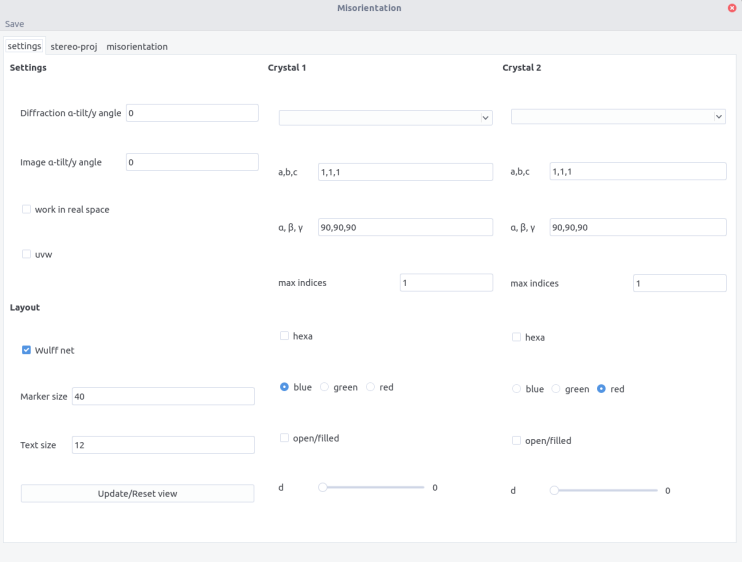
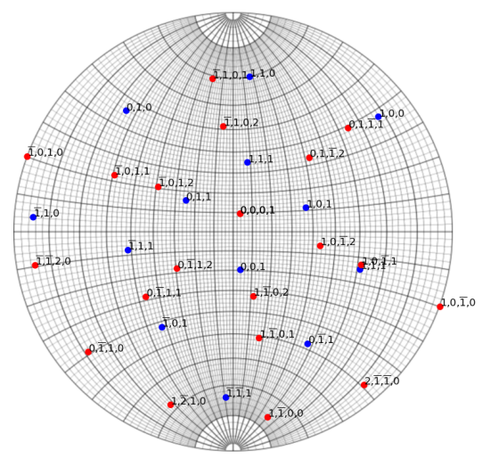
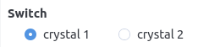
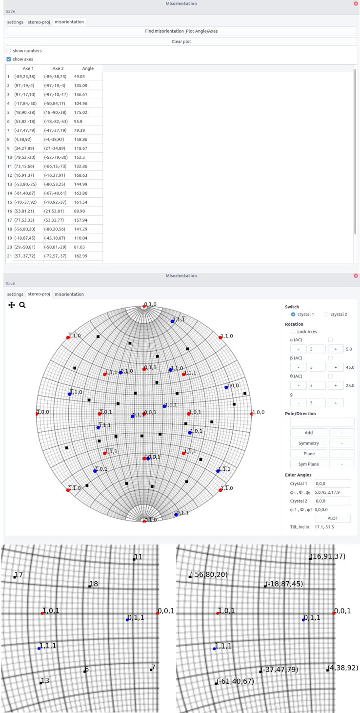

Misorientation
misorientation allows to determine orientation relationship and misorientation between two crystals
It allows:
-
Display two crystals at the same time on a stereographic projection which allows the easy determination of orientation relationship
-
Orient two crystals independently
-
Determine misorientation between two grains (same crystals)
Misorientation¶
When two crystals are separated by a grain boundary, the neighboring crystals may exhibit a specific orientation relationship that can be defined by an interface and a couple rotation axis, i.e. a common crystal direction, misorientation angle.
Considering the orientation of grains A and B defined by their Euler angles. Their orientation in the reference frame is defined by the orientation matrix O_1 and O_2. The misorientation matrix is given by:
As M is a rotation matrix, one could extract the couple angle-axis, (\theta,\vec{u}) according to:
and
However, because of crystal symmetry, the misorientation between two grains is not unique, i.e. equivalent (\vec{u},\theta) exist. The misorientation axis should then be modified by:
where O_S are the symmetry operations of the crystal. For cubic, it consists of:
-
Rotations along \langle 100 \rangle of 90°, 180° and 270° (9 rotations)
-
Rotations along \langle 110 \rangle of 180° (6 rotations)
-
Rotations along \langle 111 \rangle of 120° and 240° (8 rotations)
-
Identity operation
Thus 24 symmetry operations can be applied, leading to 24 (\vec{u},\theta) couples.
Equivalent considerations can be made for other crystal systems.
Interface¶
The interface is composed of 3 tabs.
-
the settings tab is used to enter the 2 crystal inputs, the microscopic settings regarding rotation between tilt axis and image, and the layout. Refer to stereoproj for the details information.
-
the stereo-proj tab is the plotting area
-
misorientation tab display the misorientation between crystal (if identical crystal are selected)

Procedure¶
Plotting¶
-
Set the crystal parameter and layout in the setting tab. Refer to stereoproj for the details.
-
Enter the crystal 1 and 2 orientation in the Euler Angles fields
-
Plot the stereographic projections using the
Plotbutton

Overlay of an aluminium and an zirconium crystal.
- Same additional features as in stereoproj are available: adding poles/directions, planes... and can be performed independently on crystal 1 or 2 by using the Switch button

- Rotations can be performed along x,y,z or along a pole/direction (g) entered in the
Pole/directionfield, either in crystal 1 or 2
Misorientation¶
For 2 crystals of the same structure, the misorientation can be computed after plotting the stereographic projection.
In the misorientation tab:
-
press the
Find misorientation Plot Angle/Axisbutton -
the rotation axes in both crystal are displayed along with the rotation angle
-
if the
uvwbutton is ticked in the setting tab, the axes will be given as directions and not plane normals. -
in the stereographic tab, the axes appear as black dots.
-
ticking the
show numbersorshow axeswill display the number corresponding to the angle/axis couples and the axis indices in crystal 1 on the stereographic projection, respectively.
